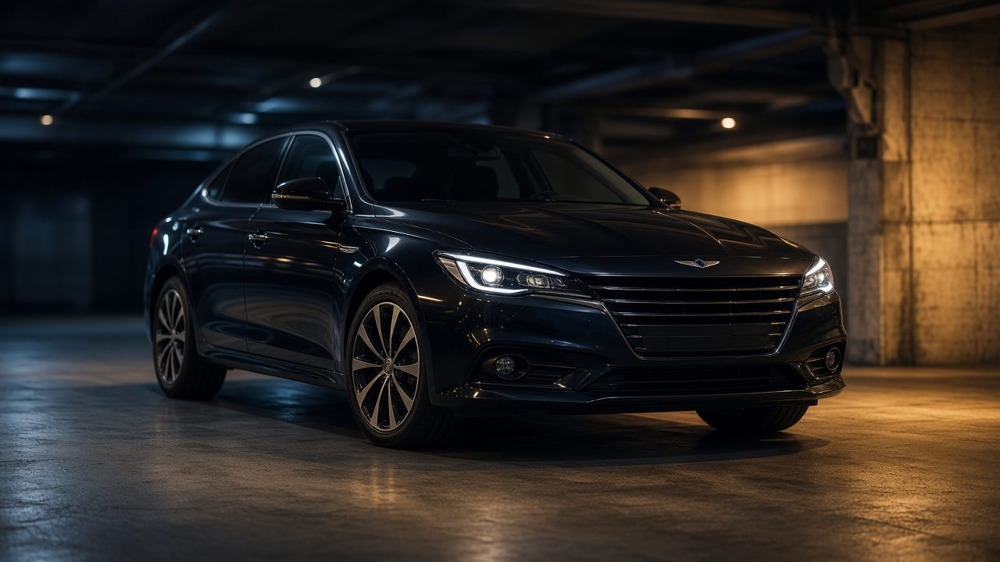
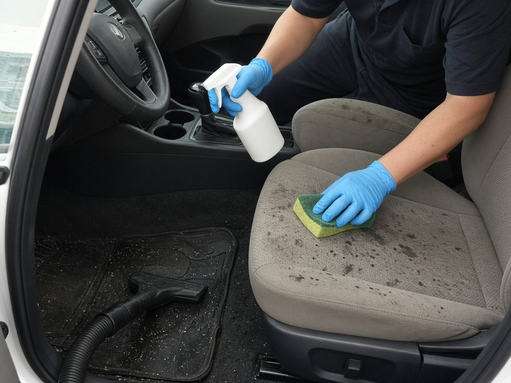
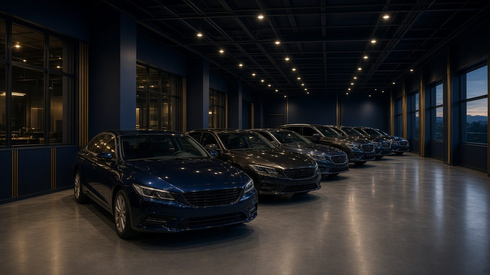
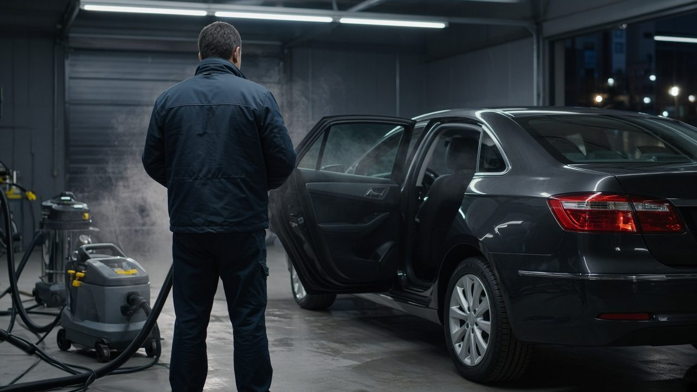
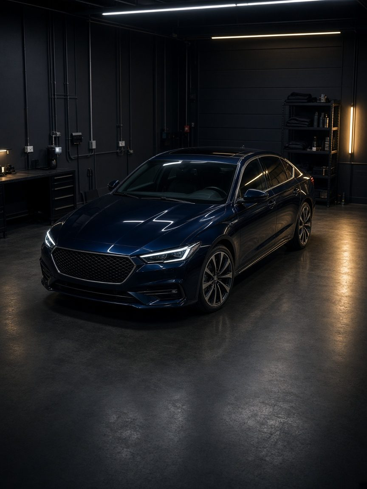

자살차량 특수청소
일반 세차·견인이 어려운 오염 차량을
카리셋이 이동하고 실내 특수청소까지 진행합니다.

고독사 차량 특수청소
발견이 늦어진 차량의 오염과 악취를
전문 약품과 장비로 제거합니다.

번개탄 차량 탈취
일산화탄소와 그을음이 밴 실내를
오존 탈취와 분해 세척으로 복원합니다.

차량 악취제거
시트, 카펫, 트림 안쪽까지 스며든
냄새와 오염의 원인을 제거합니다.


상속차량 보관 · 고인명의 자동차 처분
폐차 말소까지 카리셋이 진행합니다
단순승인 · 한정승인 · 상속포기에 맞춘 보관과 처분
시간이 필요한 순간, 차량부터 안전하게 맡기실 수 있습니다.
자세히보기
카리셋(CARRESET)은 자살차량 특수청소를 중심으로 고독사 차량, 번개탄 탈취, 상속차량 보관, 고인명의 폐차 말소를 상담합니다. 주거 유품정리와 현장 특수청소가 필요하면 같은 번호로 이어서 안내합니다.
일반 세차·견인이 어려운 오염 차량을
카리셋이 이동하고 실내 특수청소까지 진행합니다.
발견이 늦어진 차량의 오염과 악취를
전문 약품과 장비로 제거합니다.
일산화탄소와 그을음이 밴 실내를
오존 탈취와 분해 세척으로 복원합니다.

시트, 카펫, 트림 안쪽까지 스며든
냄새와 오염의 원인을 제거합니다.
일반 견인이나 폐차가 거부된 차량, 상속 절차가 끝나기 전 맡겨야 하는 고인 명의 차량도 카리셋에서 순서대로 안내합니다.

차량이 있는 시·군을 알려주시면 카리셋이 이동·견인·특수청소 순서를 안내합니다.
카리셋은 차량 위치와 오염 상태를 먼저 듣고, 현장 출동이 필요한지 보관 장소로 옮길지를 구분해 안내합니다. 서울·경기부터 제주까지 상담합니다.
오염으로 일반 견인이 어려운 차량도 이동 방법과 보관 여부를 상담합니다.
대표번호 010-4393-2414로 지역과 차종을 말씀해 주시면 다음 절차를 안내합니다.
자살차량 특수청소, 고독사 차량, 번개탄 탈취, 보관·말소 사례입니다. 유가족 개인정보는 공개하지 않습니다.
자살차량 특수청소
일반 견인이 어려운 오염 차량을 이동한 뒤, 시트와 공조까지 특수청소하고 인도했습니다.
번개탄 차량 탈취
천장과 송풍구에 남은 그을음·냄새를 공조라인 세척과 연무 탈취로 처리했습니다.
고독사 차량 특수청소
발견이 늦어진 차량의 내부 오염을 제거한 뒤, 복원보다 고인명의 폐차 말소가 맞다고 안내했습니다.

상속차량 보관
상속 방향을 정하기 전, 고인 명의 차량을 이동·보관하고 이후 처분 순서를 안내했습니다.
상담 내용에 따라 견인, 특수청소, 보관, 폐차 말소 중 필요한 단계만 진행합니다.
지역, 차종, 오염 상태, 상속 진행 여부를 듣고 다음 순서를 안내합니다.
현장 확인 후 작업 장소로 옮깁니다. 일반 견인이 거부된 차량도 상담합니다.
시트, 바닥, 공조까지 오염과 악취를 처리하고 필요하면 실내 복원을 진행합니다.
상속차량 보관, 복원 인도, 고인명의 폐차 말소 중 맞는 방향을 안내합니다.
작업 상태를 확인한 뒤 인도하거나, 말소 서류 순서를 이어서 안내합니다.
자살차량 특수청소, 보관, 폐차 말소 상담 전에 많이 묻는 내용입니다.
차량이 있는 시·군을 알려주시면 출동·이동 방법을 안내합니다. 자살차량 견인, 고독사 차량, 번개탄 탈취도 010-4393-2414로 상담합니다.
시트 폼, 바닥, 송풍구 안쪽까지 밴 냄새는 세차나 방향제로는 다시 올라옵니다. 카리셋은 오염 부위를 확인하고 오존·약품·공조라인 세척으로 차량 악취제거를 진행합니다.
한정승인·상속포기 결정 전까지 고인 명의 자동차를 보관할 수 있습니다. 보관 중 자살차량 특수청소나 고인명의 폐차 말소 방향도 함께 상담합니다.
폐차 가능 여부, 서류, 저당 확인부터 말소 등록까지 안내합니다. 오염으로 폐차가 거부된 차량은 이동·특수청소 후 진행합니다.
가능합니다. 고인유품정리, 고독사 유품정리, 고독사 특수청소, 쓰레기집 청소와 사망자차량 처리를 한 흐름으로 상담합니다. 대표번호 010-4393-2414 또는 카카오 오픈채팅으로 신청해 주세요.
카리셋 차량 작업후기는 유가족 성함·얼굴·차량번호를 올리지 않고 지역·차종·작업 내용만 공개합니다. 작업 사진을 주시면 차량 작업후기에 올립니다.
카리셋(CARRESET)은 자살차량 특수청소와 상속차량 보관, 고인명의 폐차 말소를 상담하는 차량 특화 브랜드입니다. 유품정리·특수청소가 함께 필요하면 연계합니다.